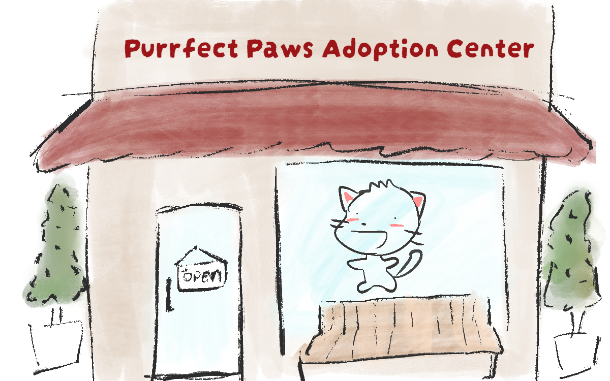
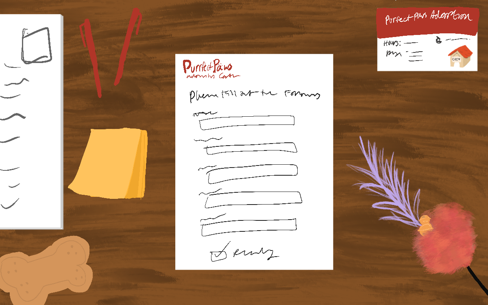
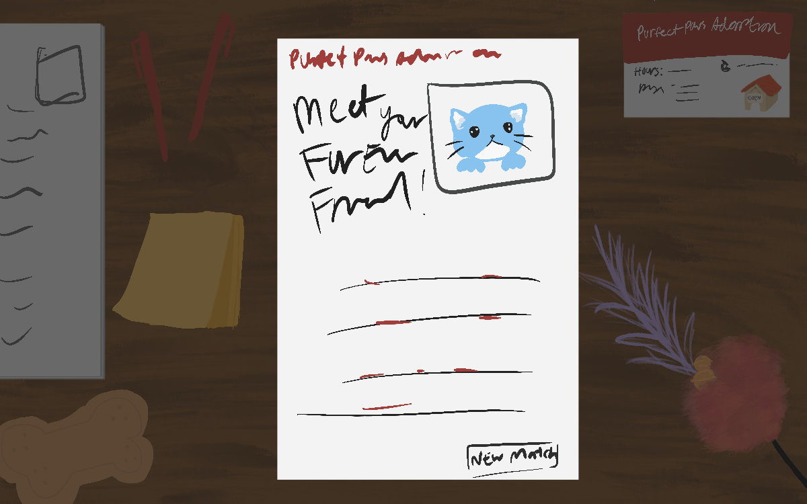

My design plan is to make the experience feel more "game-like" and like you are actually going to adopt a cat. When you first load the page there will be an image of the front of adoption center building. Then the user would hover over and click the door to "enter" the building and begin the madlibs adoption process. I am still determining the art style I want to draw everything in.
The user will be presented with a form to complete which will be on a cluttered desk to feel like you are in person filliing it out. One of the fields is to pick a color and I would like to have it be a drop-down menu with a selection of colors.
Once the form is submited a page will slide in as if they are handed their profile match. Based on the color picked from the drop-down, there is a coresponding image matching the color of the cat.
